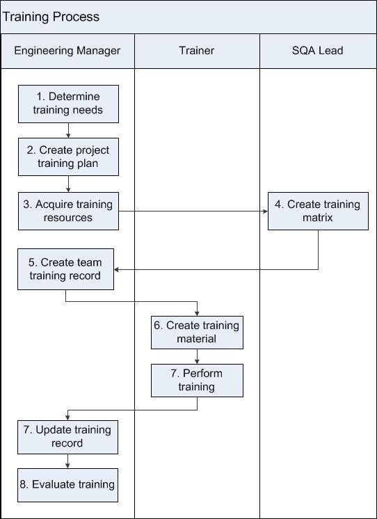

Training Process¶
This process describes how training is determined, planned, resourced, and recorded. The Engineering Manager/SQA Lead is responsible to see that this process is followed, that the Training Matrix and Records for their programs are kept up to date, and that their teams obtain the necessary training.
Entry Criteria |
A process is new or has been updated, or a need for other training has been identified. |
Inputs |
Approved new or revised process, or training need. |
Exit Criteria |
The Training Plan, Training Matrix and Training Record have been created or updated. |
Outputs |
|
Activities¶

Step # |
Activity Name |
Description |
|---|---|---|
1 |
Determine training needs |
Given the experience of team members, the Engineering Manager determines the training needed to assure team members have the skills to perform their assigned tasks. Previous experience can be found in employee resumes, in the corporate skills matrix, and through conversations with employees. |
2 |
Create project Training Plan |
The Engineering Manager creates the project’s Training Plan. The plan describes what training will be done for the project, who will do the training, and a schedule for training. The plan is reviewed and put under configuration management. Note: In cases where the program level plan already exists, the project may choose to use the existing document instead of creating them anew for the release. |
3 |
Acquire training resources |
The Engineering Manager secures the resources and budget needed for training. This may include appointing internal trainers or budgeting for external training courses. |
4 |
Create Training Matrix |
The Training Matrix is a spreadsheet with processes or other training across the top and project roles down the side. The matrix defines which roles need to be trained on each process. See the example in the Tools and Templates section below. The project’s Training Matrix is prepared by the SQA Lead and kept under CM. |
5 |
Create team Training Record |
The Training Record is a spreadsheet with all processes or other training across the top and team names down the side. See the example in the Tools and Templates section below for an example of the Training Record. The Training Record is reviewed and put under configuration management. |
6 |
Create training material |
The appointed trainers create training material. Trainers may be internal to Wind River, or external. |
7 |
Perform training |
The Trainer perform training. Trainer reports who attended training to the Engineering Manager. |
8 |
Update Training Record |
The Training Record will be updated when:
As team members are trained, the Engineering Manager records the date of the training, version of the document or process trained on, and the trainer’s initials in the cells of the Training Record. If members are retrained, the date and initials of retraining are added. Earlier training is not deleted when retraining is added. |
9 |
Evaluate training |
The Engineering Manager will evaluate the effectiveness of the training by surveying the participants to confirm if the training was successful. If training was unsatisfactory, the Engineering Manager will replan the training. |
Tools and Templates¶
Example of Training Matrix:
Role |
Requirements Management |
InfoDeve Process |
Test Process |
PLM |
X |
||
InfoDev Lead |
X |
X |
|
Test Lead |
X |
X |
X = required training
Example of Training Record:
See also Training Record Template
First Name |
Last Name |
Role |
Requirements Management |
Design & Development Process |
Test Process |
John |
Doe |
PLM |
3/15/2010 v1.2 JS |
||
Richard |
Roe |
Technical Lead |
3/15/2010 v1.2 JS |
5/29/2010 v2.0 JS, Retrain |
|
Mary |
Major |
Test Lead |
3/15/2010 v1.2 JS |
X |
X = required training outstanding
On completion of training, enter date of training, version trained on, and trainers initials
Retrain = retraining required
JS = Jane Stiles
Change Log¶
Date |
Change Request ID |
Version |
Change By |
Description |
06/12/2020 |
N/A |
0.1 |
Shree Vidya Jayaraman |
Initial Draft |